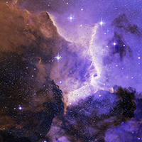
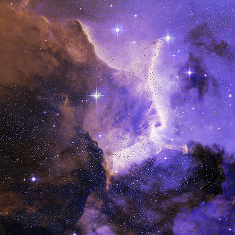
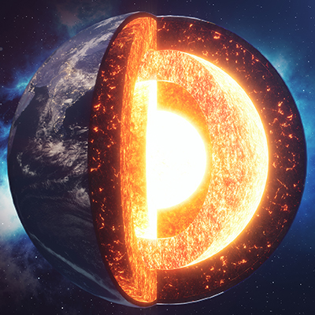
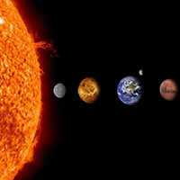
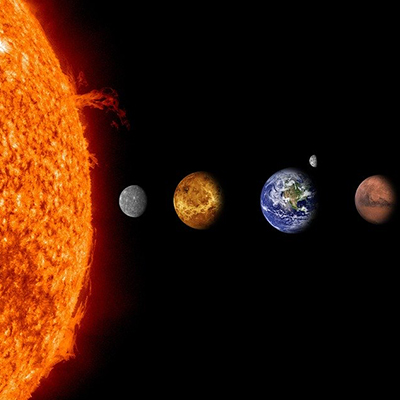
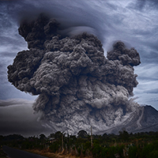
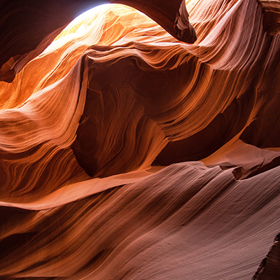
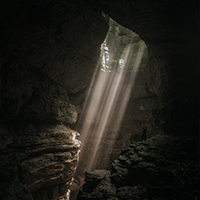

서대문자연사박물은 총 3개의 관으로 이루어져 있으며,
태초의 자연과 대자연의 역사 등을 만나보실 수 있습니다.
-

지구의 탄생

태초에 우주는 대폭발을 하였습니다. 그 후 우주공간에서 가스가 모여 구름모양을 이루고, 이 가스구름이 뭉쳐져 미행성체가 만들어지며, 이것들이 서로 충돌하며 깨지거나 뭉쳐서 별이 만들어지게 되었습니다. 이렇게 해서 태양계가 만들어지고, 지구도 만들어지며 그 안에서 생명체가 자라나 우리 인간이 살아가게 된 것입니다.
-
지구의 구조

우리 인간이 살고 있는 지구의 맨 바깥쪽은 지각입니다. 그 두께는 지구 전체의 반지름인 6,400km에 비해서 아주 얇습니다. 지구가 사과라면 껍질보다도 얇습니다. 그 안쪽에 맨틀이, 그리고 그 안쪽에 핵이 있는데, 핵 중에서도 바깥쪽에 있는 외핵은 액체상태이며, 제일 안쪽의 내핵은 고체상태입니다.
-

태양계

태양계가 속해 있는 우리 은하의 크기는 지름 10만 광년, 중심 두께 3,000 광년이며 위에서 보면 바람개비 모양의 나선구조를 하고 있습니다. 그 중 태양계는 은하 중심으로부터 약 3만 광년 떨어진 변두리에 위치해 있으며, 태양이라 불리는 별과 8개의 행성, 각 행성의 위성들, 수많은 혜성, 소행성 및 유성체들, 그리고 행성간 매질을 포함하고 있습니다.
-

역동하는 지구
지구는 지진이 일어나고 용암이 분출하는 역동적인 행성입니다. 역동하는 지구 코너에서는 사람이 다가가면 센서에 의해서 멀티비전이 작동하며 화산폭발이나 용암분출 등 지구 내에서 일어나는 여러 가지 역동적인 활동을 보실 수 있습니다. 실제로는 20개의 모니터가 네모나게 설치되어 있지만 여러 장의 거울을 이용하여 거대한 지구의 모습을 한눈에 볼 수 있도록 연출하였습니다.
-
지질현상

지구의 지각은 여러 개의 판으로 이루어져 있고, 이 판들이 이동하면서 멀어지거나 부딪히며 지질현상을 일으킵니다. 이러한 지질현상 중 가장 잘 알려진 것이 단층과 습곡일 것입니다. 이 두 가지 현상은 지층이 횡압력이나 장력, 그러니까 밀거나 당기는 힘을 받았을 때 일어나는데, 지하 깊은 곳에 있는 암석은 상대적으로 말랑말랑해서 휘기 때문에 습곡을 만들고, 상대적으로 얕은 곳에 있는 암석은 단단해서 힘을 받으면 부러지며 단층을 만들게 됩니다.
-

동굴 속 탐험
우리나라에 있는 석회암동굴, 용암동굴, 해식동굴의 분포와 생성과정 뿐만 아니라 석회암동굴의 단면도 전시되어 있어 동굴의 구조와 동굴에서 살아가는 동물들도 알아볼 수 있습니다. 아울러 우리나라의 아름다운 동굴이 사진으로 전시되어 있습니다.